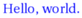
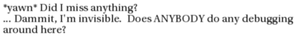
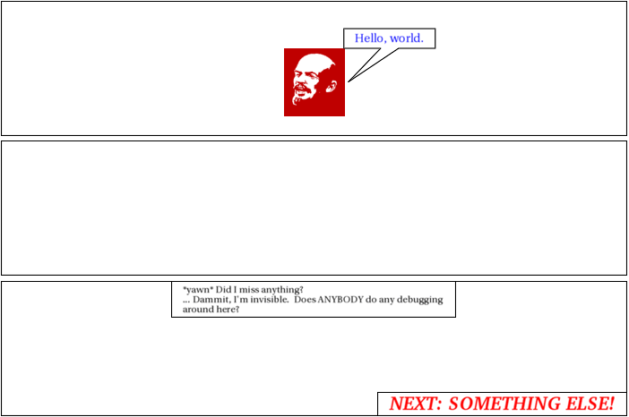

interpret_script.pl runs:
Script specification
character base http://www.vivtek.com/toonbots/characters/ panels 3 panel 1 font size=10 color=0,0,255 lenin says Hello, world. lenin leaves font clear panel 2 panel 3 dot appears caption (top middle, size=8) *yawn* Did I miss anything?<br/>... Dammit, I'm invisible. Does ANYBODY do any debugging<br/>around here? font Bitstream Charter:style=Bold Italic font color=255,0,0 caption (lower right) NEXT: SOMETHING ELSE!
Interpretation follows:
character base http://www.vivtek.com/toonbots/characters/
Character base URL now http://www.vivtek.com/toonbots/characters/
panels 3
Panel parameters and layout (currently ignored)
panel 1
Panel - (parameters currently ignored)
font size=10 color=0,0,255
Font size is now 10.
Font color is now 0,0,255.
Font is still default
lenin says Hello, world.
Speech implies presence: speaker is "lenin".
Speaker says: "Hello, world."
lenin leaves
Character lenin leaves scene
font clear
Font is now default.
panel 2
Panel - (parameters currently ignored)
panel 3
Panel - (parameters currently ignored)
dot appears
Character dot appears on scene
caption (top middle, size=8) *yawn* Did I miss anything?
... Dammit, I'm invisible. Does ANYBODY do any debugging
around here?
Caption with arguments top middle, size=8, saying "*yawn* Did I miss anything?
... Dammit, I'm invisible. Does ANYBODY do any debugging
around here?".
font Bitstream Charter:style=Bold Italic
Font is now Bitstream Charter:style=Bold Italic
font color=255,0,0
Font color is now 255,0,0.
Font is still Bitstream Charter:style=Bold Italic
caption (lower right) NEXT: SOMETHING ELSE!
Caption with arguments lower right, saying "NEXT: SOMETHING ELSE!".
Resulting XML definition:
<cartoon rowformat="1" width="700" panel-h="150" character-base-url="http://www.vivtek.com/toonbots/characters/"> <panel> <character name="lenin" action="leaves"/> <dialog who="lenin" font-size="10" font-color="0,0,255">Hello, world.</dialog> </panel> <panel/> <panel> <character name="dot"/> <caption font-size="8" location="top middle">*yawn* Did I miss anything?<br/>... Dammit, I'm invisible. Does ANYBODY do any debugging<br/>around here?</caption> <caption font="Bitstream Charter:style=Bold Italic" font-color="255,0,0" location="lower right">NEXT: SOMETHING ELSE!</caption> </panel> </cartoon>
instantiate.pl runs, but doesn't really do anything yet.
build_panel_make.pl runs.
Scene default:
<scene id="default" panels="1-2-3"> <frame tag="default-1" id="1" panels="1"> <character name="lenin" action="leaves" tag="default-1"/> </frame> <frame tag="default-2" id="2" panels="2"/> <frame tag="default-3" id="3" panels="3"> <character name="dot" tag="default-3"/> </frame> </scene>
Panel Makefile is as follows:
# Panel Makefile generated Wed Jun 18 16:26:28 PDT 2008 by Toon-o-Matic t2 # Contains no serviceable parts. Batteries not included. # Void in NH, VT, and U.S. Minor Outlying Islands. all: panel-1.svg panel-3.svg panel-1.svg: character-lenin-default-1-1.svg dialog-1-1.svg perl build_panel_g.pl panel-1.xml 1 1 > panel-1-g.svg perl merge_svg.pl "panel 1" panel-1-g.svg character-lenin-default-1-1.svg dialog-1-1.svg > panel-1.svg placement-panel-1.xml: draw-character-lenin-default-1.xml perl place_characters.pl "panel 1" 698 150 draw-character-lenin-default-1.xml > placement-panel-1.xml panel-3.svg: character-dot-default-3-3.svg caption-3-1.svg caption-3-2.svg perl build_panel_g.pl panel-3.xml 1 314 > panel-3-g.svg perl merge_svg.pl "panel 3" panel-3-g.svg character-dot-default-3-3.svg caption-3-1.svg caption-3-2.svg > panel-3.svg placement-panel-3.xml: draw-character-dot-default-3.xml perl place_characters.pl "panel 3" 698 150 draw-character-dot-default-3.xml > placement-panel-3.xml dialog-1-1.info: dialog-1-1.xml character-lenin-default-1-1.svg perl render_text.pl dialog-1-1.xml dialog-1-1.png identify -format '<graphic size="%b" height="%h" width="%w" geometry="%g" file="%f"/>' dialog-1-1.png > dialog-1-1.info dialog-1-1.svg: dialog-1-1.info perl draw_caption.pl dialog-1-1.xml dialog-1-1.info 698 150 0 dialog-1-1.png > dialog-1-1.svg draw-character-lenin-default-1.xml: character-lenin-default-1.xml perl build_character.pl this 698 150 character-lenin-default-1.xml > draw-character-lenin-default-1.xml character-lenin-default-1-1.svg: draw-character-lenin-default-1.xml placement-panel-1.xml perl draw.pl draw-character-lenin-default-1.xml 698 150 placement-panel-1.xml > character-lenin-default-1-1.svg caption-3-2.info: caption-3-2.xml perl render_text.pl caption-3-2.xml caption-3-2.png identify -format '<graphic size="%b" height="%h" width="%w" geometry="%g" file="%f"/>' caption-3-2.png > caption-3-2.info caption-3-2.svg: caption-3-2.info perl draw_caption.pl caption-3-2.xml caption-3-2.info 698 150 0 caption-3-2.png > caption-3-2.svg draw-character-dot-default-3.xml: character-dot-default-3.xml perl build_character.pl this 698 150 character-dot-default-3.xml > draw-character-dot-default-3.xml character-dot-default-3-3.svg: draw-character-dot-default-3.xml placement-panel-3.xml perl draw.pl draw-character-dot-default-3.xml 698 150 placement-panel-3.xml > character-dot-default-3-3.svg caption-3-1.info: caption-3-1.xml perl render_text.pl caption-3-1.xml caption-3-1.png identify -format '<graphic size="%b" height="%h" width="%w" geometry="%g" file="%f"/>' caption-3-1.png > caption-3-1.info caption-3-1.svg: caption-3-1.info perl draw_caption.pl caption-3-1.xml caption-3-1.info 698 150 0 caption-3-1.png > caption-3-1.svgbuild_character.pl runs on character-lenin-default-1.xml:
<character action="leaves" name="lenin" tag="default-1"/>Retrieving character definition for lenin; URL is http://www.vivtek.com/toonbots/characters/lenin.xml
Retrieving image from http://www.vivtek.com/toonbots/characters/lenin.gif
Final character definition:
<character name="lenin" label="Lenin" rel-h="50"> <draw face="left" file="image-lenin-1.gif" type="image"/> </character>
Built character:
<character action="leaves" name="lenin" tag="default-1" rel-h="50" rel-w="" height="75" width="66.6666666666667"> <draw face="left" file="image-lenin-1.gif" type="image" rel-h="100" rel-w="100" height="75" rel-x="0" rel-y="0" w="136" h="153" width="66.6666666666667"/> </character>
place_characters.pl places characters for panel 1:
<placement> <character name="lenin" x="315.666666666667" y="52.5"/> </placement>
draw.pl runs on draw-character-lenin-default-1.xml:
SVG built:
<g x="315.666666666667" y="52.5" w="66.6666666666667" h="75"> <image x="315.666666666667" y="52.5" width="66.6666666666667" height="75" xlink:href="image-lenin-1.gif"/> </g>
render_text.pl renders "dialog-1-1.xml":
<dialog who="lenin" ref-who="character-lenin-default-1-1.svg" font-color="0,0,255" font-size="10">Hello, world.</dialog>
draw_caption.pl runs:
Graphics info:
<graphic width="82" file="dialog-1-1.png" geometry="320x320+12+2" height="18" size="4155"/>
<g> <polyline style="stroke:black; stroke-width:1; fill:white" points="382.333333333334,30.5 484.333333333334,30.5 484.333333333334,52.5 443.333333333334,52.5 387.333333333334,90 423.333333333334,52.5 382.333333333334,52.5 382.333333333334,30.5"/> <image x="10" y="2" width="82" height="18" xlink:href="dialog-1-1.png" transform="translate(382.333333333334,30.5)"/> </g>
build_panel_g.pl runs, producing:
<g transform="translate(1,1)"/>
merge_svg.pl runs to produce panel 1:
<g transform="translate(1,1)"><g w="66.6666666666667" y="52.5" h="75" x="315.666666666667"> <image width="66.6666666666667" y="52.5" xlink:href="image-lenin-1.gif" x="315.666666666667" height="75"/> </g> <g> <polyline points="382.333333333334,30.5 484.333333333334,30.5 484.333333333334,52.5 443.333333333334,52.5 387.333333333334,90 423.333333333334,52.5 382.333333333334,52.5 382.333333333334,30.5" style="stroke:black; stroke-width:1; fill:white"/> <image width="82" y="2" transform="translate(382.333333333334,30.5)" xlink:href="dialog-1-1.png" x="10" height="18"/> </g> </g>
build_character.pl runs on character-dot-default-3.xml:
<character name="dot" tag="default-3"/>Retrieving character definition for dot; URL is http://www.vivtek.com/toonbots/characters/dot.xml
Final character definition:
<character rel-w="100" name="dot" label="Dot" rel-h="1"> <draw fill="black" type="circle"/> </character>
Built character:
<character name="dot" tag="default-3" rel-h="1" rel-w="100" height="1.5" width="1.5"> <draw fill="black" type="circle" rel-h="100" rel-w="100" height="1.5" width="1.5"/> </character>
place_characters.pl places characters for panel 3:
<placement> <character name="dot" x="348.25" y="89.25"/> </placement>
draw.pl runs on draw-character-dot-default-3.xml:
SVG built:
<g x="348.25" y="89.25" w="1.5" h="1.5"> <circle cx="349" cy="90" r="" style="stroke:black; stroke-width:1; fill:none"/> </g>
render_text.pl renders "caption-3-1.xml":
<caption location="top middle" font-size="8">*yawn* Did I miss anything?<br/>... Dammit, I'm invisible. Does ANYBODY do any debugging<br/>around here?</caption>
draw_caption.pl runs:
Graphics info:
<graphic width="297" file="caption-3-1.png" geometry="320x320+9+1" height="36" size="24438"/>
<g transform="translate(190,0)" x="190" y="0" w="317" h="40"> <rect x="0" y="0" width="317" height="40" style="stroke:black; stroke-width:1; fill:white"/> <image x="10" y="2" width="297" height="36" xlink:href="caption-3-1.png"/> </g>
render_text.pl renders "caption-3-2.xml":
<caption location="lower right" font="Bitstream Charter:style=Bold Italic" font-color="255,0,0">NEXT: SOMETHING ELSE!</caption>
draw_caption.pl runs:
Graphics info:
<graphic width="258" file="caption-3-2.png" geometry="320x320+20+6" height="22" size="16209"/>
<g transform="translate(420,124)" x="420" y="124" w="278" h="26"> <rect x="0" y="0" width="278" height="26" style="stroke:black; stroke-width:1; fill:white"/> <image x="10" y="2" width="258" height="22" xlink:href="caption-3-2.png"/> </g>
build_panel_g.pl runs, producing:
<g transform="translate(1,314)"/>
merge_svg.pl runs to produce panel 3:
<g transform="translate(1,314)"><g w="1.5" y="89.25" h="1.5" x="348.25"> <circle cx="349" r="" style="stroke:black; stroke-width:1; fill:none" cy="90"/> </g> <g w="317" y="0" h="40" transform="translate(190,0)" x="190"> <rect width="317" y="0" style="stroke:black; stroke-width:1; fill:white" x="0" height="40"/> <image width="297" y="2" xlink:href="caption-3-1.png" x="10" height="36"/> </g> <g w="278" y="124" h="26" transform="translate(420,124)" x="420"> <rect width="278" y="0" style="stroke:black; stroke-width:1; fill:white" x="0" height="26"/> <image width="258" y="2" xlink:href="caption-3-2.png" x="10" height="22"/> </g> </g>
draw_panels.pl runs:
<svg height="466" width="702"> <rect height="466" width="700" style="fill: white"/> <polyline transform="" style="fill:none; stroke:black; stroke-width:1" arrow="" points="1,1 699,1 699,151 1,151 1,1"/> <polyline transform="" style="fill:none; stroke:black; stroke-width:1" arrow="" points="1,314 699,314 699,464 1,464 1,314"/> <polyline transform="" style="fill:none; stroke:black; stroke-width:1" arrow="" points="1,157 699,157 699,307 1,307 1,157"/> </svg>
merge_svg.pl runs to produce the final cartoon:
<svg width="702" height="466"> <rect width="700" style="fill: white" height="466"/> <polyline transform="" points="1,1 699,1 699,151 1,151 1,1" style="fill:none; stroke:black; stroke-width:1" arrow=""/> <polyline transform="" points="1,314 699,314 699,464 1,464 1,314" style="fill:none; stroke:black; stroke-width:1" arrow=""/> <polyline transform="" points="1,157 699,157 699,307 1,307 1,157" style="fill:none; stroke:black; stroke-width:1" arrow=""/> <g transform="translate(1,1)"/> <g transform="translate(1,1)"><g y="52.5" w="66.6666666666667" h="75" x="315.666666666667"> <image y="52.5" width="66.6666666666667" xlink:href="image-lenin-1.gif" x="315.666666666667" height="75"/> </g> <g> <polyline style="stroke:black; stroke-width:1; fill:white" points="382.333333333334,30.5 484.333333333334,30.5 484.333333333334,52.5 443.333333333334,52.5 387.333333333334,90 423.333333333334,52.5 382.333333333334,52.5 382.333333333334,30.5"/> <image y="2" width="82" transform="translate(382.333333333334,30.5)" xlink:href="dialog-1-1.png" x="10" height="18"/> </g> </g> <g transform="translate(1,314)"/> <g transform="translate(1,314)"><g y="89.25" w="1.5" h="1.5" x="348.25"> <circle cx="349" r="" cy="90" style="stroke:black; stroke-width:1; fill:none"/> </g> <g y="0" w="317" transform="translate(190,0)" h="40" x="190"> <rect y="0" width="317" style="stroke:black; stroke-width:1; fill:white" x="0" height="40"/> <image y="2" width="297" xlink:href="caption-3-1.png" x="10" height="36"/> </g> <g y="124" w="278" transform="translate(420,124)" h="26" x="420"> <rect y="0" width="278" style="stroke:black; stroke-width:1; fill:white" x="0" height="26"/> <image y="2" width="258" xlink:href="caption-3-2.png" x="10" height="22"/> </g> </g> </svg>
The final result (drumroll please!)
